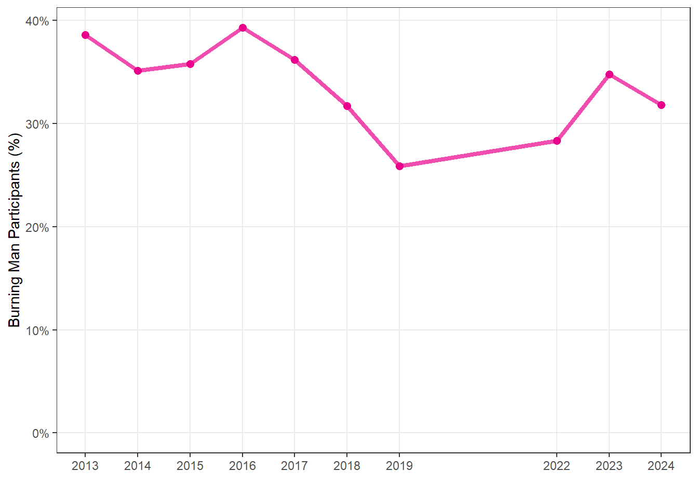

| 2013 | 2014 | 2015 | 2016 | 2017 | 2018 | 2019 | 2022 | 2023 | 2024 | |
|---|---|---|---|---|---|---|---|---|---|---|
| Virgin | 38.6% (37.6%, 39.6%) | 35.1% (34.2%, 36.1%) | 35.8% (34.7%, 36.8%) | 39.3% (37.9%, 40.7%) | 36.2% (35.1%, 37.3%) | 31.7% (30.6%, 32.8%) | 25.9% (24.9%, 26.9%) | 28.3% (27.3%, 29.4%) | 34.8% (33.4%, 36.1%) | 31.8% (30.1%, 33.6%) |